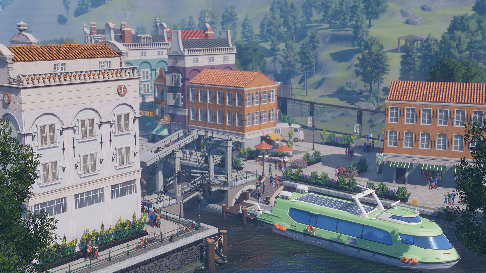
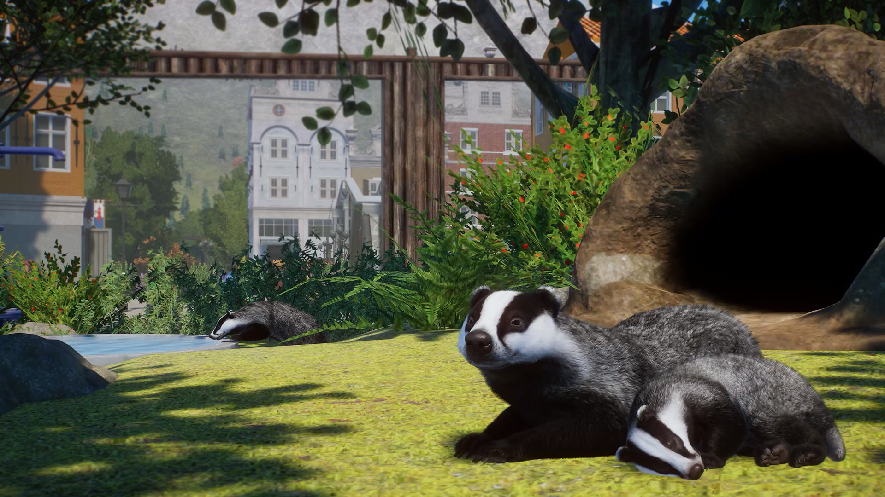
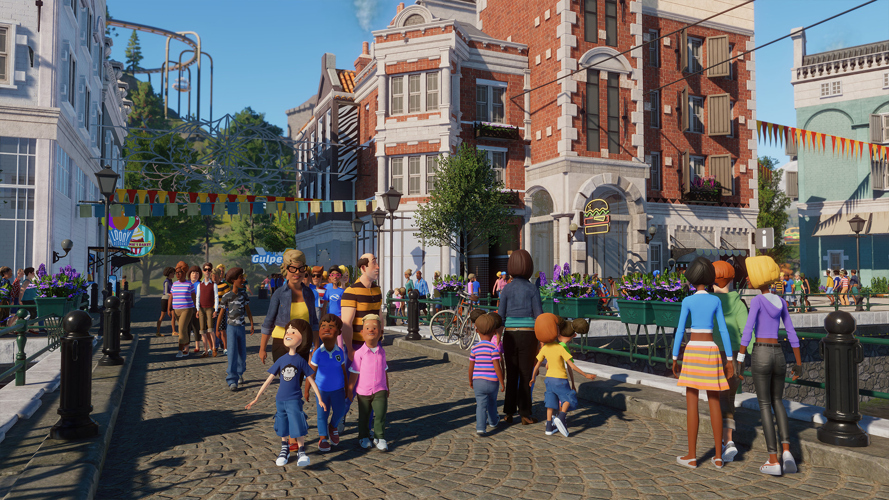
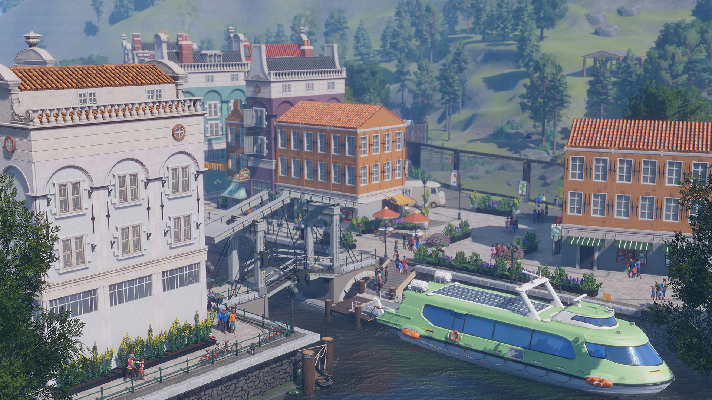
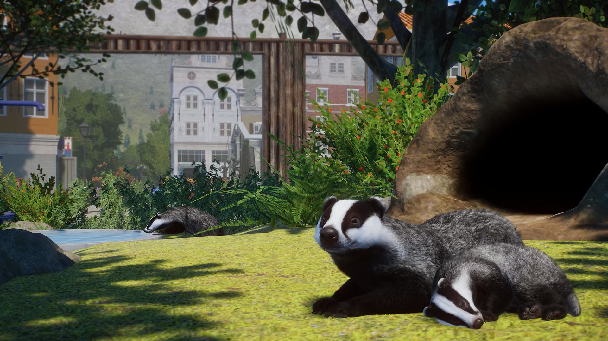
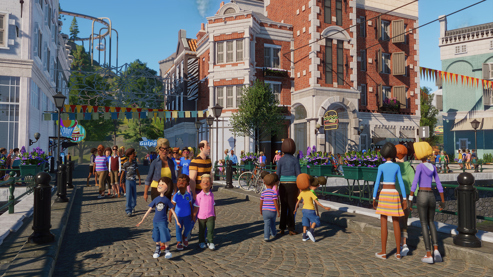

Europe Pack
Data wydania: 14 grudnia 2021
Cena pakietu: 35.99 zł
Oficjalny zwiastun DLC Europe Pack
Ciesz się pięknem Europy w dodatku Planet Zoo: Pakiet Europa! Przedstawiamy pięć nowych, dodanych na życzenie zwierząt (koziorożec alpejski, ryś euroazjatycki, daniel zwyczajny, borsuk europejski i salamandra plamista). Te piękne europejskie
gatunki będą cieszyć oczy odwiedzających zoo. Wzbogać zoo o ponad 250 nowych, efektownych elementów scenerii, wystaw na próbę swoje umiejętności zarządcy zoo, realizując nowy, pasjonujący scenariusz umiejscowiony w okolicach majestatycznej
alpejskiej góry, i sprowadź magię Europy do swojego zoo.
Galeria zdjęć
 





O tym DLC
Powitajmy koziorożca alpejskiego, rysia euroazjatyckiego, daniela zwyczajnego, borsuka europejskiego i salamandrę plamistą! Cztery z tych zwierząt to zwierzęta z wybiegów, a jedno to zwierzę z ekspozycji. Zbuduj dla nich idealny dom i zaspokajaj codzienne potrzeby, a sprawisz, że te europejskie gatunki pokochają swoje otoczenie. Obserwuj, jak borsuki europejskie kryją się w norach, szukając schronienia przed niesprzyjającą pogodą, i daj swoim gościom możliwość obserwowania tego niezwykłego spektaklu, instalując pod ziemią kamery i przesyłając obraz na telebim. Dodatkowo Pakiet Europa zawiera trzy nowe urozmaicenia, dzięki którym zwierzęta nie będą się nudzić. Wspinając się na skupiska głazów na Górze kozic, koziorożec alpejski zaprezentuje swoją zwinność i umiejętność przemierzania trudnych tras. Daniel zwyczajny i koziorożec alpejski mogą spożywać pokarm w karmnikach — strachach na wróble. Natomiast ryś euroazjatycki i borsuk europejski skorzystają z szorstkich powierzchni drapaków z korą do czochrania się. Dotychczasowi mieszkańcy zoo także mogą korzystać z tych urozmaiceń.
Ponad 250 nowych elementów scenerii
Buduj i dekoruj, korzystając z nowych, kreatywnych możliwości inspirowanych malowniczymi sceneriami Europy, w tym kultowymi miastami, takimi jak Wenecja i Amsterdam. Wznoś ozdobne mosty nad lśniącymi zbiornikami wodnymi. Dodawaj lokalną roślinność, taką jak platan klonolistny, dąb korkowy i winorośl. Umieszczaj nowe znaki ze zwierzętami w średniowiecznym stylu. Możesz nawet uświetnić świąteczny czas za pomocą girland z lampkami i dekoracji — stwórz własną świąteczną wioskę lub zimowy jarmark!
Ścieżka dźwiękowa
Oryginalna ścieżka dźwiękowa złożona z 4 wyjątkowych utworów. Możesz słuchać tej wspaniałej muzyki, kiedy tylko zechcesz.
Posłuchaj Europe Pack
Pasjonujący nowy scenariusz
Właściciele Sosnowego zoo Ala chcą, żeby znalazło się w nim jak najwięcej gatunków zwierząt przed sezonem świątecznym. Czy podejmiesz się tego wyzwania? Spróbuj swoich sił w nowym, świątecznym scenariuszu z limitem czasu, wystawiając na próbę swoje umiejętności zarządzania zoo. To położone u ośnieżonych podnóży strzelistej góry zoo obejmuje trzy odrębne strefy wzorowane na Włoszech, Francji i Szwajcarii. Aby zdobyć jak najwięcej punktów, możesz rozbudować tereny począwszy od góry po trzy regiony w stylu tych krajów, zapewniając swoim gościom wycieczkę po Europie, której nie zapomną.